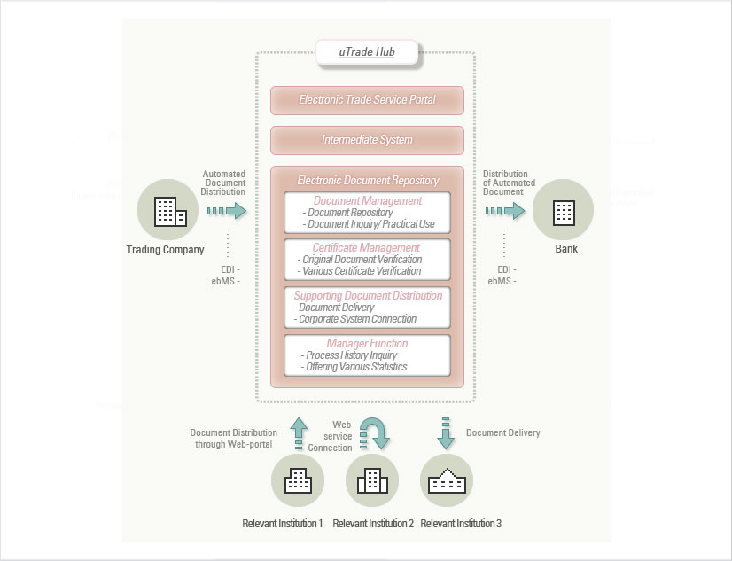

システム構造
電子文書保管所
各種電子貿易文書が, より便利に照会, 管理できる[電子文書保管所]貿易文書の保管及び証明が簡單になります.
電子貿易文書保管所は、貿易業務を処理する過程で発生する各種の電子文書を原本保証を通じ、安全かつ信頼できるように保管する保管所であり、保管されている文書が法的に原本であることを保証する機能を提供することで、貿易関連の文書が電子的に流通できるように支援します。
電子貿易サービスを通じて発給された輸出信用状、輸出入申告済証などの貿易文書は、自動で電子貿易文書保管所に原本であることを確認する証明書とともに保管されるため、企業の貿易担当者は電子文書保管所を通じ原本の紙の文書と等しい效力の認められた電子文書を第3者である関連機関に電子データで流通することができます。
電子貿易文書保管所は、電子的な取引きを通じて流通される文書の原本に対し、法的效力を与えることで、原本性のためにペーパー文書を提出しなければならなかった業務の非效率性を排除し、貿易業務の全プロセスにおける自動化の基盤を提供します。

サービスの特徴及び期待される效果
特徴
貿易文書に対する組織的保管、管理及び原本保証により、電子文書の流通をサポートします。企業にとっては、ペーパー文書を提出せず、原本であることが保証された電子文書を自由に流通することができます。
期待される效果
主なサービスの案内
- · 文書の原本性確保により、ペーパー文書の繰り返し提出の手間を省き、電子文書に対する信頼性を確保することができる
- · 原本文書のデータとしての流通をサポートすることで、貿易プロセスの簡素化及びプロセス断絶を改善する效果
- · 電子文書の流通に対する法的根拠が与えられたことで、すべての貿易業務のe- ビジネス化が進む
- · 個別企業単位のペーパー・電子文書の保管によるコストが削減でき、第3者保管による信頼性が確保される
電子文書の管理
- · 貿易文書の登録、照会及び出力、流通、移管、廃棄、削除に対する全サイクルの管理
- · 保管文書に対するアクセス制御機能により、文書セキュリティー機能が強化される。
- · 登録文書に対する様々な検索機能が提供される
文書に対する証明機能
- · 登録文書の原本性保証のための登録証明
- · 出力及び流通様式の多様な要求により変換された文書に対する、不変更の証明
- · 文書の配達、文書の廃棄、文書の移管に対する処理の証明
- · 文書の原本及び処理に対する法的根拠の提示
文書の流通機能
- · 文書保管所に保管されている文書の第3者への配達処理機能
- · 関連機関をサポートするための流通方法(参照キー、添付)支援
- 文書に対するアクセス制御政策の管理、PKI基盤の暗号化及び本人認証などの機能による流通性及び文書の機密性の同時保障
文書の活用に対する履歴及び統計機能の提供
お問い合わせ
- · 文書の処理履歴照会の機能
- · 文書名別、使用者別及び日付別の統計情報照会機能
Contact information inserted